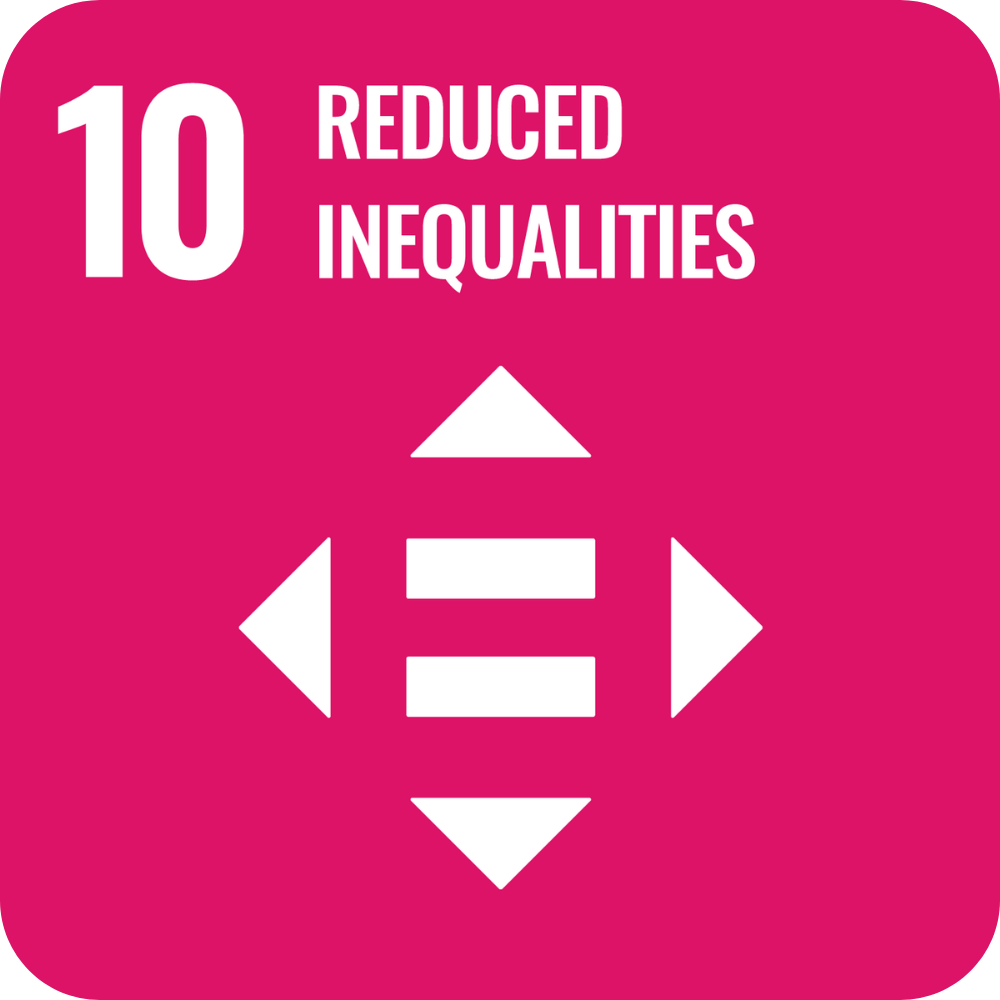

- Improve content quality
- Develop MIL skills
- Gain audience digital recognition
Impacts
Who PIGEON supports
- Identify trustworthy content
- Learn MIL through daily interactions
- Engage responsibly online
- Reduce harmful content spread
- Build healthier and trustable online communities
- Support proactive content governance
Sustainable Development Goals
SDG alignment
SDG 4
Learning MIL beyond the classroom.
PIGEON’s AI-powered plugins turn everyday digital engagement into habits of critical thinking and responsible communication.

SDG 10PIGEON lowers barriers to learning and empowers people of all ages and backgrounds to develop essential digital literacy skills, especially in communities and regions where formal MIL education resources remain limited.
SDG 16
Building a more trustworthy and responsible digital information ecosystem.
PIGEON promotes access to transparent information, responsible and informed decision-making online. Through small, non-censoring prompts, it helps users slow the spread of misinformation while strengthening trust and inclusion in digital communities.
Questions
FAQ
01 How can I earn XP and level up my PIGEON?
You can earn XP by practicing responsible digital behaviours.
- Creators: Improve your content by following PIGEON’s MIL suggestions before publishing.
- Consumers: Make responsible choices when engaging with questionable content.
- Everyone: Complete MIL mini-games and answer questions correctly to earn extra XP.
02 What are the benefits of increasing my PIGEON level?
For creators, a higher PIGEON level reflects consistent responsible content creation. It can help strengthen digital credibility, personal brand value, and audience trust.
For consumers, a higher level reflects stronger Media and Information Literacy skills. It helps users build a healthier personal information environment with more authentic, valuable, and reliable content.
03 Will my level be affected if PIGEON makes a mistake?
No. PIGEON respects user choices. Your level will only stay the same or increase, never decrease.
If you believe PIGEON has made an incorrect assessment, you can submit a review request. The team will respond within three working days.
04 Does PIGEON collect my personal data or monitor my online activities?
No. PIGEON follows the principle of “analyse content, not people.”
It only analyses the information needed for content evaluation and does not store browsing history, private conversations, or personal behavioural profiles.
Users remain in control of permissions, and any data processing is transparent, limited, and based on consent.
05 Does PIGEON decide whether content is true or false?
No. PIGEON supports critical thinking rather than replacing human judgement.
Instead of giving simple “true” or “false” labels, PIGEON provides transparency indicators, evidence signals, and contextual explanations so users can make more informed decisions.
06 Will PIGEON make mistakes or show bias?
Like any AI-assisted system, PIGEON has limitations. Its results may be affected by training data, language coverage, available sources, and cultural context.
PIGEON should be continuously evaluated across different languages, regions, and communities to reduce potential bias and improve fairness.
Next
Leave a Feedback